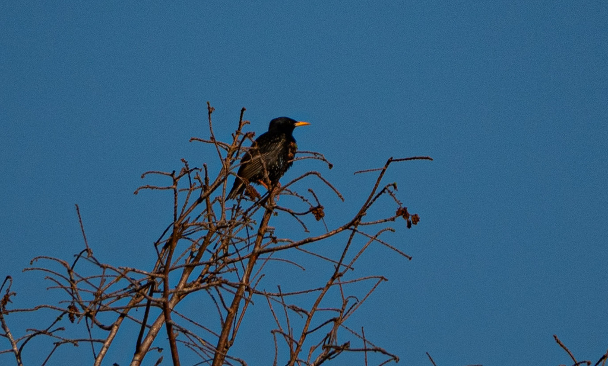

- Every European Starling in North America descends from roughly 100 birds released into New York's Central Park in 1890 and 1891. From that single foothold, the species spread continent-wide within a few decades — one of the most dramatic range expansions ever recorded for a bird.
- The plumage shifts dramatically with the seasons. After the fall molt, fresh feathers are tipped in white, giving the bird a heavily speckled look. By spring those tips wear away to reveal the glossy black, green, and purple iridescence that makes a breeding starling look genuinely striking in good light.
- Starlings use an unusual foraging trick called gaping: they push the bill into soil or leaf litter and then force it open, prying apart the substrate to expose hidden insects. The jaw muscles are large enough to power this technique, giving them access to prey most other birds simply cannot reach.
- The European Starling is listed among the IUCN's 100 Worst Invasive Species worldwide — a designation that reflects the scale of its impact on native cavity-nesting birds and agriculture rather than any particular danger to people.
A stocky, short-tailed bird about 8 to 9 inches long with a wingspan of roughly 12 to 16 inches. The body is compact and round-bellied, the bill long and straight, and the tail notably short. In flight, the pointed, triangular wings give a star-like silhouette — the source of the name 'starling.'
Glossy black overall, with a strong iridescent sheen of green and purple that shifts with the angle of light. Bill is bright yellow; the base of the lower mandible is blue in males, pink in females. Legs are pinkish-red.
After the fall molt, fresh feathers are tipped in white and buff, giving the bird a heavily speckled appearance. The bill darkens to gray-brown. As winter progresses and feather tips wear away, the speckles gradually disappear, and by spring the bird is glossy black again.
Young birds in their first summer are uniformly dull gray-brown with a dark bill — strikingly different from adults and sometimes confusing. They transition into adult-patterned plumage by fall of their first year.
The short tail, triangular wings, and rapid, buzzy wingbeats are distinctive. The birds often glide briefly between bursts of flapping. Large flocks move in tight coordination, which is not typical of native blackbirds, with which starlings are sometimes confused.
Often found alongside Common Grackles and other blackbirds, but starlings are stockier, shorter-tailed, and have a straight pointed bill rather than the curved bill of a grackle. The triangular wing shape in flight is a reliable separator.
One of the more vocally complex birds you will encounter. The song is a lengthy, rambling performance of wheezes, rattles, liquid warbles, and clear whistles that can run for more than a minute without repeating. Woven throughout are mimicry sequences: starlings regularly imitate other species, including Killdeer, Eastern Wood-Pewee, Northern Bobwhite, and Red-tailed Hawk, incorporating their calls so cleanly that experienced birders are sometimes fooled. Contact calls between flock members include a drawn-out, hissing note and a descending whistle. Flocks in flight produce a continuous chatter that is one of the park's most characteristic background sounds in fall and winter.
Look for a compact, short-tailed black bird walking — not hopping — across a lawn or open ground, probing the soil with a pointed yellow bill. In good light, the green-and-purple gloss on the back is unmistakable. In fall and winter, the white speckles make the bird look almost polka-dotted. In flight, the triangular wing shape and buzzy, direct wingbeats set it apart from the native blackbirds it often accompanies. Juveniles in early summer are a confusing plain gray-brown; look for their stocky build and straight bill.
An opportunistic omnivore. Insects make up the majority of the diet when available — beetles, grasshoppers, flies, caterpillars, and earthworms are all taken, usually by probing or gaping in open soil and short grass. In fall and winter the diet shifts heavily toward fruit, berries, and seeds. The birds will also take grain, food scraps, and whatever is accessible at feeding stations.
Check any mowed or open area in the park, especially the short-grass lawns around the pavilions, where starlings forage in loose, strutting groups throughout the day. The edges of the retention pond and any wetland margins are also worth scanning — insects are especially active near water, and starlings work these margins hard. Large trees with natural cavities or woodpecker holes are worth checking for nesting or roosting birds. At dusk, watch the sky above the tree line for incoming flocks heading to a communal roost. In fall and winter, flocks are larger and more conspicuous; listen for the chattering before you see the birds.
Year-round in Manatee County, and active during daylight hours. Flocks are most visible in the morning and late afternoon during active foraging bouts. Fall and winter bring the largest numbers, as northern migrants join resident birds. Breeding activity peaks March through June; juveniles in their plain gray-brown plumage are conspicuous in early summer flocks.
Observe freely. Starlings in open areas are tolerant of people and easy to watch at close range. Do not feed them — human food offers no nutritional benefit to birds and large flocks become dependent on artificial feeding and concentrate in ways that increase disease risk.

- © Rob Carr (CC-BY-NC), via iNaturalist